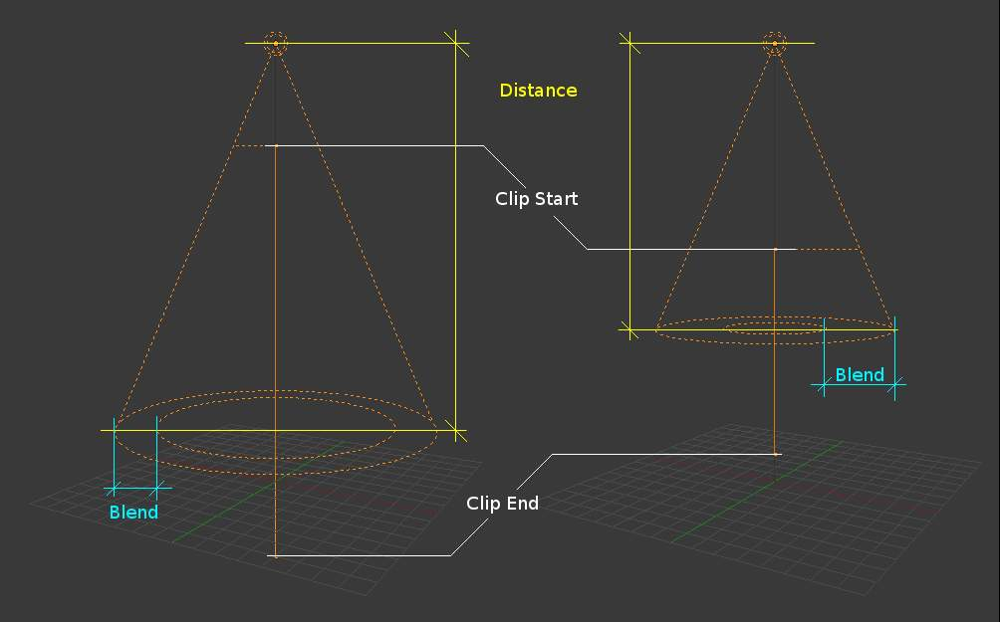

简介¶
A Spot lamp emits a cone-shaped beam of light from the tip of the cone, in a given direction.
The Spot light is the most complex of the light objects and indeed, for a long time, among the most used thanks to the fact that it was the only one able to cast shadows. Nowadays, with a ray tracer integrated into Blender’s internal render engine, all lamps can cast shadows (except Hemi). Even so, Spot lamps’ shadow buffers are much faster to render than ray-traced shadows, especially when blurred/softened, and spot lamps also provide other functionality such as “volumetric” halos.
Lamp options¶
{kind=link}
Common Lamp options of a Spot.
- Distance, Energy and Color
- These settings are common to most types of lamps, and are described in Light Properties.
- This Layer Only, Negative, Diffuse and Specular
- These settings control what the lamp affects, as described in What Light Affects.
- Light Falloff and Sphere
These settings control how the light of the Spot decays with distance. See Light Attenuation for details.
Changing the Spot options also changes the appearance of the spotlight as displayed in the 3D视图.
{kind=link}
Shadows¶
{kind=link}
Shadow panel set to Ray Shadow.
Spotlights can use either ray-traced shadows or buffered shadows. Either of the two can provide various extra options. Ray-traced shadows are generally more accurate, with extra capabilities such as transparent shadows, although they are quite slower to render.
- No Shadow
- Choose this to turn shadows off for this spot lamp. This can be useful to add some discreet directed light to a scene.
- Buffer Shadow
- Buffered Shadows are also known as depth map shadows. Shadows are created by calculating differences in the distance from the light to scene objects. See Buffered Shadows for full details on using this feature. Buffered shadows are more complex to set up and involve more faking, but the speed of rendering is a definite advantage. Nevertheless, it shares with other lamp types common shadow options described in Shadows Properties.
- Ray Shadow
- The ray-traced shadows settings of this lamp are shared with other lamps, and are described in Raytraced Properties.
Spot Shape¶
- Size
The size of the outer cone of a Spot, which largely controls the circular area a Spot light covers. This slider in fact controls the angle at the top of the lighting cone, and can be between (1.0 to 180.0).
Changing the spot Size option¶ - Blend
The Blend slider controls the inner cone of the Spot. The Blend value can be between (0.0 to 1.0). The value is proportional and represents that amount of space that the inner cone should occupy inside the outer cone Size.
The inner cone boundary line indicates the point at which light from the Spot will start to blur/soften; before this point its light will mostly be full strength. The larger the value of Blend the more blurred/soft the edges of the spotlight will be, and the smaller the inner cone’s circular area will be (as it starts to blur/soften earlier).
To make the Spot have a sharper falloff rate and therefore less blurred/soft edges, decrease the value of Blend. Setting Blend to 0.0 results in very sharp spotlight edges, without any transition between light and shadow.
The falloff rate of the Spot lamp light is a ratio between the Blend and Size values; the larger the circular gap between the two, the more gradual the light fades between Blend and Size.
Blend and Size only control the Spot light cone’s aperture and softness (“radial” falloff); they do not control the shadow’s softness as shown below.

渲染 showing the soft edge spotlighted area and the sharp/hard object shadow.
Notice in the picture above that the object’s shadow is sharp as a result of the ray tracing, whereas the spotlight edges are soft. If you want other items to cast soft shadows within the Spot area, you will need to alter other shadow settings.
- Square
- The Square button makes a Spot light cast a square light area, rather than the default circular one.
- Show Cone
- Draw a transparent cone in 3D视图 to visualize which objects are contained in it.
- Halo
- Adds a volumetric effects to the spot lamp. See Spot Halos.
{kind=link}
{kind=link}